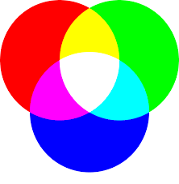

Definition
History
Importance
Representation
Colour Theory
Colour theory is the collection of rules and guidelines designers use to communicate with users in visual interfaces.
Designers tend to reference a colour wheel, along with consideration of human optical ability, psychology and culture, to pick the best colours to convey the message they are trying to send.
The colour wheel assists in the use of colour theory in a multitude of ways, making the connection between popular patterns in colour theory more distinct and simpler to apply
Humans invented pigments as early as 40,000 years ago, combining soil, burnt charcoal, chalk and animal fat to create a basic palette of yellow, red, brown, black and white.
However, colour theory itself was initially formulated upon the three "primary" colours, red, yellow and blue (RYB), because it was believed that the combination of these three colours is capable of forming every other colour.
In the late 19th century, German and English scientists established that colour is best represented in red, green, and blue-violet (RGB), modeled through the additive mixture of three monochromatic lights.
This is based off of humans' trichromacy, as our retina contains three colour receptors, each sensitive to red, green and blue-violet.
Now, colour theory has advanced to new heights and there are various ways to represent and pick colours.
The importance of colour theory takes form in its ability to evoke specific emotions and responses from people, usually due to its appearance in certain objects or phenomena.
Some common examples of this are:


While most colours have multiple meanings and associations, these are some of the most common ones.
Colour theory has its own uses in both creative and practical uses.
It is important in effectively conveying a message, being able to work its magic through language barriers and in urgent situations.
As mentioned before, there are a variety of ways to represent colour.
The most common types are:
The RGB colour model is an additive colour model which makes use of the red, green and blue primary colours of light to reproduce a variety of other colours. Being additive means that the RGB colour model creates colour by blending visible light, meaning the higher the value, the lighter it will be.
As the name suggests, hexadecimal colour code is in the form of hexadecimal numbering, which is a numbering system of base 16. The 256 values available for red, green and blue respectively are converted to hexadecimal and compiled into the format #RRGGBB.
The HSL colour model consists of hue, which determines a degree on the colour wheel, followed by saturation, which determines the intensity of the colour, and finally, lightness, which determines the the percentage of light in the colour.
All three of these are then combined into the (H, S, L) format, with HSL ranging from 0-360, and S and L ranging from 0 to 100%.
CMYK colour model is most commonly used in printing of graphic design, as it is a subtractive colour model. All the values range from 0-100% in the format (C, M, Y, K) respectively.

It works well with most printing as it provides more accurate colour, not requiring any colour code conversion, as the process of printing uses ink to produce colour via subtractive colour mixing, using CMYK colour model.